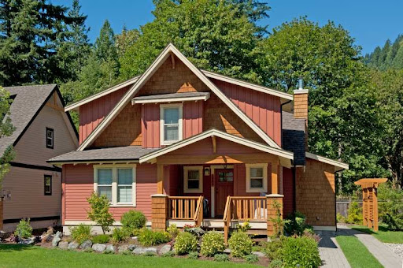

Rachel's goal of graduating from college is a significant achievement representing years of hard work, dedication, and perseverance. Her graduation is a milestone that starts the beginning of a new chapter in her life and opens up opportunities for personal and professional growth.
Starting a Career
After the completion of her degree, she will have undoubted confidence in her job search. She states that she doesn’t care what kind of job she gets, as long as it allows her to live comfortably. But her dream job is to become a data analyst.
Buying a House

Another big goal for Rachel is buying a home. Being a homeowner is a dream she will one day make a reality. Whether the house is in southern California or Oregon she wants a place to call hers. Her ideal choice would be to live on a small ranch with her mother and have some animals, such as chickens.